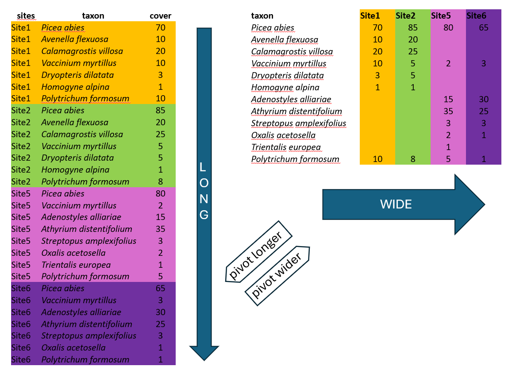
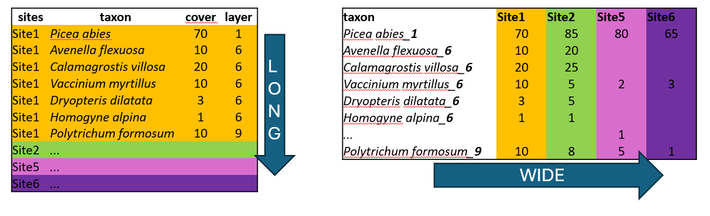

library(tidyverse)
library(readxl)
library(janitor)Export to other formats
3.1 Long to wide format
There are two main ways how the data can be organised across rows and columns. Wide or long format. We will show you an example of spruce forest data, where we recorded plant species in several sites and at each site we also estimated their abundance, here approximated as percentage cover (higher value means that the species covered larger area of the surveyed vegetation plot, but we do not give the area itself, just value relatively to the total area, i.e. percentage of total area). The covers of species might overlap, as they grow in different heights.

Wide format is more conservative and used in many older packages for ecological data analysis. In our example we list all species and the colums are used to indicate their abundance at each site. This is the way you need to prepare your species matrix for ordinations in vegan. However, wide format has also many cons.
One of them is the size of the file. In the example above, there are abundance of given plants in each of the site. When the species is present in just one site, here Trientalis europaea, it is still keeping space across the whole table, where there can be hundreds or thousands of sites. The table code is then of course memory demanding. Another disadvantage is that you cannot add easily new information to the listed species. If you for example want to separate species that are in a tree vegetation layer (recognised in vegetation ecology as 1), herb layer (6) and moss layer (9), you would have to add this information to the name of the species e.g. Picea_abies_1.

Long format in contrast, is great for handling large datasets. We can also add any information, describing the data, such as vegetation layers, growth forms, native/alien status etc. After that we can very simply filter, summarise and calculate further statistics.
We will upload the species data saved in a long format and transform it into a matrix =wide format, so that it can be used in specific ecological analyses e.g. in vegan. (For wide to long see study materials)
spe <- read_csv("data/spe.csv") New names:
Rows: 4583 Columns: 6
── Column specification
──────────────────────────────────────────────────────── Delimiter: "," chr
(1): species dbl (5): ...1, releve_nr, nonvascular, layer, cover_perc
ℹ Use `spec()` to retrieve the full column specification for this data. ℹ
Specify the column types or set `show_col_types = FALSE` to quiet this message.
• `` -> `...1`tibble(spe)# A tibble: 4,583 × 6
...1 releve_nr species nonvascular layer cover_perc
<dbl> <dbl> <chr> <dbl> <dbl> <dbl>
1 1 183111 Carex digitata 0 6 0.5
2 2 183111 Carpinus betulus 0 7 3
3 3 183111 Cytisus nigricans 0 6 0.1
4 4 183111 Festuca ovina 0 6 3
5 5 183111 Fraxinus excelsior 0 7 0.1
6 6 183111 Galium rotundifolium 0 6 0.1
7 7 183111 Hieracium lachenalii 0 6 3
8 8 183111 Hieracium murorum 0 6 0.5
9 9 183111 Hieracium sabaudum s.lat. 0 6 0.1
10 10 183111 Hypericum perforatum 0 6 0.1
# ℹ 4,573 more rowsWe can see that there are plant species names sorted by releve_nr, where each number indicates a vegetation record from one specific site (can be also called vegetation plot or sample). We may need to change the species names to be in the compact format, without any spaces, just underscores. For this we will use mutate function with str_replace (for string specification) indicating that each space should be changed to underscore and we will directly apply it to the original column.
spe %>%
mutate(species = str_replace_all(species, " ", "_"))# A tibble: 4,583 × 6
...1 releve_nr species nonvascular layer cover_perc
<dbl> <dbl> <chr> <dbl> <dbl> <dbl>
1 1 183111 Carex_digitata 0 6 0.5
2 2 183111 Carpinus_betulus 0 7 3
3 3 183111 Cytisus_nigricans 0 6 0.1
4 4 183111 Festuca_ovina 0 6 3
5 5 183111 Fraxinus_excelsior 0 7 0.1
6 6 183111 Galium_rotundifolium 0 6 0.1
7 7 183111 Hieracium_lachenalii 0 6 3
8 8 183111 Hieracium_murorum 0 6 0.5
9 9 183111 Hieracium_sabaudum_s.lat. 0 6 0.1
10 10 183111 Hypericum_perforatum 0 6 0.1
# ℹ 4,573 more rowsWe have the condensed name with underscores, but there are still more variables in the table. We can either remove them or merge them to be included in the final wide format. Here we will go a bit against tidy rules and add the information about the vegetation layer directly to the variable Species using unite function from the package tidyr which merges strings from two or more columns into a new one: A+B =A_B. Default separator is again underscore, unless you specify it differently by sep=XX argument.

Argument na.rm indicates what to do if in one of the combined columns there is no value but NA. We have set this argument to TRUE to remove the NA. If you keep it FALSE it can happen that in some data the new string will be a_NA or NA_b, or even NA_NA (see line 4 of our example).
Remove argument set to TRUE will remove the original columns which we used to combine the new one (in the example above you will have only z). In our case we will keep original columns for visual checking and we will use select function in the next step to remove them.
Note that function that works in an opposite direction is called separate or separate_wider_delim
spe %>%
mutate(species = str_replace_all(species, " ", "_"))%>%
unite("species_layer", species,layer, na.rm = TRUE, remove = FALSE) # A tibble: 4,583 × 7
...1 releve_nr species_layer species nonvascular layer cover_perc
<dbl> <dbl> <chr> <chr> <dbl> <dbl> <dbl>
1 1 183111 Carex_digitata_6 Carex_… 0 6 0.5
2 2 183111 Carpinus_betulus_7 Carpin… 0 7 3
3 3 183111 Cytisus_nigricans_6 Cytisu… 0 6 0.1
4 4 183111 Festuca_ovina_6 Festuc… 0 6 3
5 5 183111 Fraxinus_excelsior_7 Fraxin… 0 7 0.1
6 6 183111 Galium_rotundifolium_6 Galium… 0 6 0.1
7 7 183111 Hieracium_lachenalii_6 Hierac… 0 6 3
8 8 183111 Hieracium_murorum_6 Hierac… 0 6 0.5
9 9 183111 Hieracium_sabaudum_s.la… Hierac… 0 6 0.1
10 10 183111 Hypericum_perforatum_6 Hyperi… 0 6 0.1
# ℹ 4,573 more rowsAt this point we have everything we need to use it as input for the wide format table: releve_nr. species_layer and values of the abundance saved as cover_perc. One more step is to select only these or to deselect (-) those not needed.
spe %>%
mutate(species = str_replace_all(species, " ", "_"))%>%
unite("species_layer", species,layer, na.rm = TRUE, remove = FALSE)%>%
select(releve_nr, species_layer, cover_perc)# A tibble: 4,583 × 3
releve_nr species_layer cover_perc
<dbl> <chr> <dbl>
1 183111 Carex_digitata_6 0.5
2 183111 Carpinus_betulus_7 3
3 183111 Cytisus_nigricans_6 0.1
4 183111 Festuca_ovina_6 3
5 183111 Fraxinus_excelsior_7 0.1
6 183111 Galium_rotundifolium_6 0.1
7 183111 Hieracium_lachenalii_6 3
8 183111 Hieracium_murorum_6 0.5
9 183111 Hieracium_sabaudum_s.lat._6 0.1
10 183111 Hypericum_perforatum_6 0.1
# ℹ 4,573 more rowsNow we can finaly use the pivot wider function to transform the data. We have to specify from where we are taking the names of new variables (names_from) and from where we should take the values which should appear in the table (values_from). Since we changed the format, all species, even those not occurring in that particular site/plot have to get some values. Therefore, one more step is to fill the empty cells by zeros using values_fill. In this case we can do that, because we know that if the species was absent its abundance was exactly 0.
spe %>%
mutate(species = str_replace_all(species, " ", "_"))%>%
unite("species_layer", species,layer, na.rm = TRUE, remove = FALSE)%>%
pivot_wider(names_from = species_layer,
values_from = cover_perc,
values_fill = 0) -> spe_widetibble(spe)# A tibble: 4,583 × 6
...1 releve_nr species nonvascular layer cover_perc
<dbl> <dbl> <chr> <dbl> <dbl> <dbl>
1 1 183111 Carex digitata 0 6 0.5
2 2 183111 Carpinus betulus 0 7 3
3 3 183111 Cytisus nigricans 0 6 0.1
4 4 183111 Festuca ovina 0 6 3
5 5 183111 Fraxinus excelsior 0 7 0.1
6 6 183111 Galium rotundifolium 0 6 0.1
7 7 183111 Hieracium lachenalii 0 6 3
8 8 183111 Hieracium murorum 0 6 0.5
9 9 183111 Hieracium sabaudum s.lat. 0 6 0.1
10 10 183111 Hypericum perforatum 0 6 0.1
# ℹ 4,573 more rows